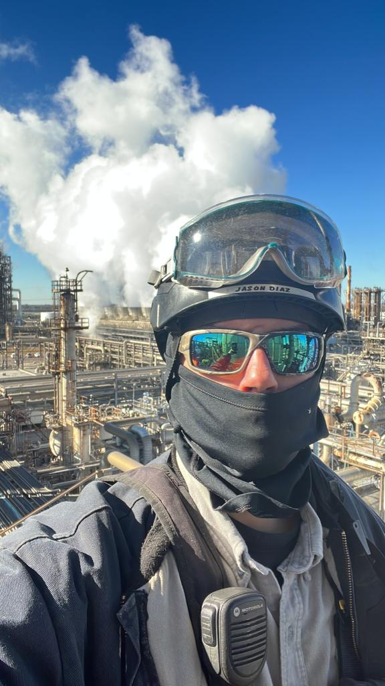

Jason Diaz Bio
Jason Diaz
Jason Diaz is a 38 year old puertorican working in the oil and gas
industry for 8 years. His work experience ranges from working in oil
refineries in Texas, Oklahoma, Kentucky and Louisiana to working on
offshore deap water drilling platforms. Rope Access lvl 3s
responsibilities are to ensure the safety of the lvl 1s and lvl 2s working
on his crew. Rigging ropes for climbers to ensure they are getting the job
done as safe and comfortable as posible. Performing work tasks from
non-destructive testing to mechanical work. He enjoys playing sports,
mainly futbol or "soccer" like some people call it. Video games are a big
part of his life. Mainly competitive games from Call of Duty Warzone, Apex
Legends and Rocket league. Mostly just plays Warzone at this time by the
name Pectorius.
